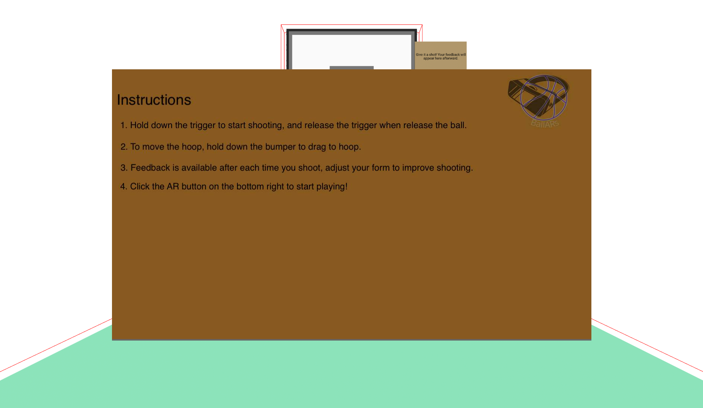

Everyone's Progress
CJ Lin:
- Added an overlay of instructions on how to play
- Adjusted feedback algorithm to give feedback when hoop moves position
Peter Michael:
- Understood how SMPL model works ang got VIBE algorithm to work
Yan Zhe Ong:
- Worked with Jasmine develop a better shooting mechanics that takes the last 20 frames
- Attempted to make move hoop more smooth and move real time
Jasmine Woon:
- Worked with Yan develop a better shooting mechanics that takes the last 20 frames
- Attempted to make move hoop more smooth and move real time
Updates on Code
CJ has spent time working on the overlay for BallARs. The reason we added an overlay, so that user can recieve information on how the game works before entering AR world. We opted for this option because our previous menu overlay had little functionality and wasn't necessary to add another button press. We also thought that adding a an extra window for the instructions in AR world would obstruct the user's ability to shoot a ball anywhere, so we decided for our current design.
 Overlay with instructions
Peter has been working furiously trying to understand VIBE algorithm and implmenting it. He got a simple video clip to work of Steph Curry shooting a free throw basket. He has also gone to Luyang's office hours to get help on this algorithm and understand how SMPL body model files work.
 Overlay with instructions
Overlay with instructions
Jasmine and Yan has been working on shooting and now the shoot mechanism are less buggy. They took the average of the last 20 frames to get a velocity in the x, y, and z direction. Though the shooting isn't a real semblance to real life shooting, it's the closest they can get to simulating throwing a basketball in VR.
Updates on Ideas
BallARs has reached the point in the quarter where CSE 481V has become less busy. As a result, they can focus more on their time on coding BallARs. We have about 1.5 more weeks to go, and everything seems to be going on track. We are cautiously optimistic that we can achieve our target product.
Many hours going BallARs this month seen on glitch
With things seemingly on-track, BallARs are still tyring to improve the AR experience
Plan for Next Week
CJ Lin:
Goals for Monday 5/24
- Work with Peter to incorperate better feedback from pose estimation
Peter Michael:
Goals for Monday 5/24
- Implement retargeting model from SMPL files
Yan Zhe Ong:
Goals for Monday 5/24
- Work with Jasmine to get a better move hoop mechanism
- start working on croquet
Jasmine Woon:
Goals for Monday 5/24
- Work with Yan to get a better move hoop mechanism
- start working on croquet
Blocking Issues
One blocking issue that Jasmine and Yan are facing is how to update the position of the hoop real time. Currently, they have a tick function that checks the controller's old position and current position. Then, using those two positions, calculate the change for the new hoop's position. However, they are encountering a behavior where the controller's old position and current position are the same each tick. They need a way to get two different position in order to work. See their attempt here.
CJ is trying to figure out how to handle the case when the user throws an air ball. He hasn't come up with a solution just yet but he's working on it!